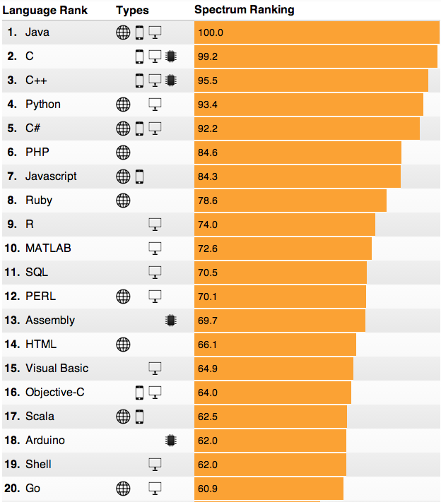

Do It All With Ruby
There is a recent post on thewildblogger.com titled “Top 12 Programming Languages for Beginners in 2015” which uses diagrams from IEEE Spectrum based on popularity of languages on the internet based on quantity. The article itself does a decent job on touching on many good languages. But I find the image graphic misleading.

Image: IEEE Spectrum Ranking for Programming Languages
Java
Back in the day Java didn’t exist. Java was built as a revolutionary way to make cross-platform software a reality. Write the software in Java and use it anywhere. A lot of work has gone into Java to make this possible. Even hardware manufacturers have made chips that are designed to make Java work more easily within systems. For a long time Apple had kept their iPhones proprietary in such a way that you would have to use their choice of programming language Objective-C to write apps for it. But overtime Apple included some hardware that includes Java support. So Java is a language that is cross-platform, and available to use most anywhere.
There are many pros and cons with Java. It’s been around long enough, and it’s been optimized enough, to be a great language for servers offering amazing tool-sets. Security has been a reoccurring issue many times over the years, but who doesn’t have to deal with that?
Java is very important in todays day and age. The language itself probably isn’t a good “beginner language”. It’s the longest “hello world” example I’ve seen (besides getting into system languages like assembly). So it’s syntax is a bit excessive. Scala, on the other hand, is a beautiful language written on top of Java which compiles into Java bytecode. It’s thought of highly by the author of Java.
“If I were to pick a language today other than Java, it would be Scala.” James Gosling
father of Java

To take advantage of the wonderful Java ecosystem some languages have incorporated into Java, such as JRuby. JRuby gives you the best of both worlds. You can write pure Ruby and have it run as Java code. You can also write Ruby that works with native Java code. And with the soon to be released JRuby 9000 you will have all the latest features of Ruby 2.2 at your finger tips.
C/C++
Most computer operating systems were written in some flavor of C with some Assembly. This is slowly changing as more languages continue to be written, such as Rust (which I hear is a language primarily written for writing operating systems). Ruby was originally written in C by Yukihiro Matsumoto. It includes excellent support for extending C libraries in your projects. There are plenty of online videos/resources you can check out on this subject. Yukihiro Matsumoto has also authored the mRuby language for programming Ruby code for embedded systems. So Ruby is pretty tight with C.
D
D is a beautiful language. I really believe more people should know about it. Spread the word! Check it out! If C was the successor to Assembly and C++ to C, then I would consider D the successor to C++. D is designed so that you can write code optimized for mutli-core systems. It’s very powerful, efficient, and not too bad looking ;-). There’s a Ruby programmer out there, Tomasz Stachewicz, who started a project called rudy to allow the same integration with D as Ruby has with C. The project hasn’t gotten the attention that it needs and has been dormant for about 6 years. A lot has changed since then and I really hope more people who feel passionate about these two languages will pick this project up and make this a full featured library.
Python
As a developer who’s been in Python for over 10 years I’d like to think I’ve gotten pretty familiar with it. From what I can see the popularity of Python has lead to it gaining a huge following. I have too many books on it (if you can imagine that). Python seems to be getting into many places, web hosting/services, Linux system boot-ups, game development, networking technologies, and much more. It has a lot of support for a lot of libraries and features. It, having a big community, has really helped it grow. I believe that this has allowed Python to have a few more robust tools over Ruby. But as I’ve converted into a Ruby enthusiast I know that as Python developers learn Ruby they’ll fall in love with it.
The main reason I brought up Python is game development. Python has an amazing game library called PyGame which is integrated with SDL and OpenGL. I wrote a full game in PyGame with animations, sound effects, and a complete UI. I even wrote it before I understood what classes were, so I wrote it entirely with functions. Haha! Not DRY I must say. But I digress. The library itself is wonderful and well supported. In Ruby we also have a library for SDL. But the community hasn’t seemed to be as supportive in this; and the project’s own website discourages it:
Ruby/SDL has following disadvantage.
- Slow – Ruby is very slow compared to C or C++. In my opinion it is difficult to develop 3D games with Ruby/SDL.
But SDL has fast 2D drawing function, so I think they can develop many kinds of games with Ruby/SDL.
There is absolutely no reason why PyGame should be any better in performance advantage over Ruby/SDL. They are in the same level of language hierarchy so performance should be similar. I believe that with the right positive community around Ruby/SDL that it can be taken farther than PyGame and better games can be made for it.
I also think Python has a better networking library Twisted than the Ruby community. It’s not that we don’t have the tools and libraries (which we have many!), they’re just not as robust. I believe this has everything to do with the size of the community involved. The Ruby community is an awesome one with many passionate people who love the language… we just need to bring more people in and the effect will be more projects to flourish. That won’t be too difficult to do as the pay for Ruby web framework development is some of the highest paying available work at the moment.
JavaScript
It wasn’t that long ago that JavaScript was a client side only language based solely within your browser. JavaScript has perhaps one of the most interesting evolutions. As it grows it’s required to keep all it’s legacy support. So it becomes more powerful yet has many evolved methods and ways of doing things. JavaScript being brought to the server side of things has made it a “contender”, as it were, as a programming language amongst the rest. It’s been shooting up in popularity. And pay, from what I hear, is also going up for it.
JavaScript is no longer just a useful tool to get things done in your browser. It’s become a capable environment for both server and client code to be executed. This is revolutionizing the web, and many big projects/companies are taking advantage of this. We have AngularJS, EmberJS, and the new contender ReactJS just to name a few of the big ones within the JavaScript landscape. Please don’t yell at me for bringing up ReactJS (or for neglecting node.js and others). I know it’s just for the View layer where Ember and Angular are both Model-View-Controller complete systems. But I will get more into React in a moment.
Ruby really shines here in JavaScript. Starting with UJS (Unobtrusive JavaScript) that was introduced into Rails way back in the day, to the growingly popular Opal. Opal is a transpiler; a Ruby to JavaScript compiler. With Opal you write Ruby code, it gets “translated” into JavaScript, and it pretty much “Just works!”. Opal has opened new possibilities that are only just starting to be realized. Volt is one such realization. Introduced officially in “RubyConf 2014 – Isomorphic App Development with Ruby and Volt by Ryan Stout“; Volt revolutionizes MVC by eliminating the duplication of MVC implementation on both server and client code to just one MVC code base that “just works” between the server and client. The power of transpiling changes everything.
ReactJS, by Facebook, redefines how we do Views for the web. They’ve taken steps that have had the internet community, at first, thinking badly of them, but whom have then later accepted the new found methodology. If you haven’t seen React in action I highly recommend watching this conference talk: “React.js Conf 2015 – Hype!“. Here we have a live demo between Ember, Angular, and React. The difference is astounding! React blows the others away in performance! The technology behind it has to do with a VirtualDOM they’ve created within the browser and using a diff/update kind of implementation to allow only the part of the DOM that needs to be updated to update. It’s brilliant!
Not only does React redefine how Views are implemented (with styles and the like), but the team from Facebook have just introduced React Native. React Native allows you to write software for iOS, and soon Android, natively as if you were writing a pure HTML view. There are no cheap tricks or gimmicks to “mimic” Native features of iOS. They have implemented a second thread process to process the updates to the main thread in your iOS app which runs NATIVE code. You have to see it to believe it: “React.js Conf 2015 Keynote – Introducing React Native“. This brings the JavaScript language to offer true native iOS/Android app implementation making it a key feature to reaching audiences with a beautiful native experience. One thing I should mention is they’re not making it ‘write once, run everywhere’, but ‘learn once, write everywhere’. What that means for you is you will write very similar code for each but you’re writing it specifically for the targeted OS thereby allowing you to write purposefully native behavior. (Read this excellent review: First Impressions using React Native)
Ruby has a library for making natively compiled iOS/Android applications with RubyMotion. RubyMotion isn’t a free library, there is a monthly cost involved. You can write you code once in Ruby and have it work on both iOS and Android. This is wonderful! You have the advantage of a powerful and beautiful language, such as Ruby, able to reach the broadest of audiences. If you are an App developer, or plan to be, it’s a worthwhile library.
Now I want to tickle your mind with this. We have Ruby running on Java with JRuby getting all the access you could want to the Java ecosystem. We have Ruby code converting to perfectly running JavaScript with Opal. And we have a View layer with React that needs a Model/Controller back-end. What if we decide to write a Rails framework application integrated with react (react-rails) built on top of JRuby with some meta-programming to allow us to write an application that automatically deploys to Web & mobile with full native features? Well I’m not sure what React Native requires to deploy native apps, but right now this actually sounds feasible. Some might argue that this would be a terrible idea because of possible performance issues. But I’d like to point out that Rails already runs on JRuby with React view support, so it’s not far-fetched at all. This would be superbly AMAZING! So much power!!! What would one do with it?
Ruby
Ruby was designed for programmers. It’s intuitive, straightforward, simple, and allows many different styles of writing. Many programmers can come in from a different language and write code similar to what they’re used to and find it very compatible. You can often guess what something is, or should be, and find that it works. It’s very well designed.
Ruby has an excellent meta-programming ability to it. You can write code, that writes code. This opens up doors to limitless possibilities.
Ruby is one of the most powerful languages out there. The saying “If you can’t beat them, join them” fits in my opinion as Ruby has within it’s full capacity both Java and JavaScript. Personally I think Ruby could beat them in a fair fight. But that’s not the way of things. So Ruby has joined the masters and can implement whatever could be desired.
Summary
Many of these thoughts have been on my mind for some time. Basing languages based on popularity isn’t honest for any of the upcoming underdogs, nor is it a fair assessment for beginners. I’m not saying that Ruby is the one language that fits all situations. Not in the least. But I’d like to argue that it’s not a Web-Only language, but is very much a compatible language for OS dev, game dev, web dev, embedded systems, and so much more.
The shear power of testing and automating with Ruby is worthy of mentioning. Whether it’s code testing with test-unit, rspec, minitest, cucumber, and capybara, or with web automation/scraping with watir-webdriver, selenium, mechanize, nokogiri, and the like. There are entire web based systems that will QC your code like Travis CI (although they’re not a Ruby alone service). I just can’t do it justice by trying to list a few. The possibilities are limitless.
There are many Ruby technologies I haven’t touched on and I don’t mean to leave them out so I apologize for that. My main point in writing this is to raise awareness of the power available with the Ruby language and the many options available. I also wanted to bring light to a few areas that I saw needed attention, and inspire new ideas through new technologies that are evolving/developing.
When getting into discussion over different programming languages I take a big risk at stepping on peoples toes. I hope I haven’t done that for anyone. I’m not a one language guy. I want to learn many programming languages. Scala, D, and Assembly are some I’d like to be savvy with, and it won’t stop there.
If you’re not involved in an open source project I highly encourage you to find one you’re passionate about and get involved. There are many good code projects that need a person like you to call them “home”. I also encourage you to branch out and learn new languages, if for no other reason, to take back something new.
I’m excited about what’s developing in the open source world and I want to be there when it happens! I’m sure that many of you feel the same way.
I hope that this was an enjoyable read for you and that the information here was insightful to you. Please comment, share, subscribe to my RSS Feed, and follow me on twitter @6ftdan!
God Bless!
-Daniel P. Clark
Image by Heine Christiansen via the Creative Commons Attribution-NonCommercial-ShareAlike 2.0 Generic License.
ferdinandrosario
February 9, 2015 - 7:19 am
Yes of course, I enjoyed. very fruitful info, Thanks for sharing and tickling..
Daniel P. Clark
February 9, 2015 - 3:01 pm
Thanks for the feedback!
genericid
February 10, 2015 - 3:32 am
Please remove that obtrusive social bar at the bottom! Thanks.
Daniel P. Clark
February 10, 2015 - 11:25 am
Done!
genericid
February 12, 2015 - 8:12 am
Your article was good though 🙂
Daniel P. Clark
February 12, 2015 - 11:29 am
Thanks! I appreciate it.
Forrest Chang
March 12, 2015 - 8:03 pm
Daniel, do you know about Jubilee/Vert.x? I think they are key, along w/opal in the browser, in keeping Ruby viable in most of the places people are leaving Ruby for — my rubyconf talk and slides try to cover that http://funkworks.blogspot.com/2015/01/jubilee.html
Daniel P. Clark
March 13, 2015 - 11:31 am
I hadn’t heard about it. I like the presentation. Definitely looks like a great resource to have. I’ve been planning to get into Torquebox myself. Would you consider that a competitive product? Or perhaps that’s like comparing apples and oranges?
Forrest Chang
March 14, 2015 - 2:58 pm
I used to favor torquebox, I see them in sort of a similar area, they support many of the same features and give you access to the JVM ecosystem and other JVM languages. Vert.x feels lighter and more modular where Torquebox puts into JBoss. That said, the jubilee/rails game I show in the presentation runs in a single free heroku dyno, not sure if torquebox could